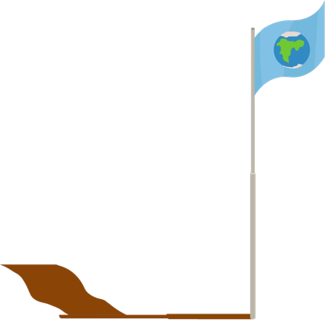
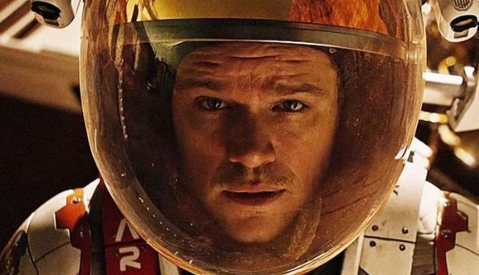
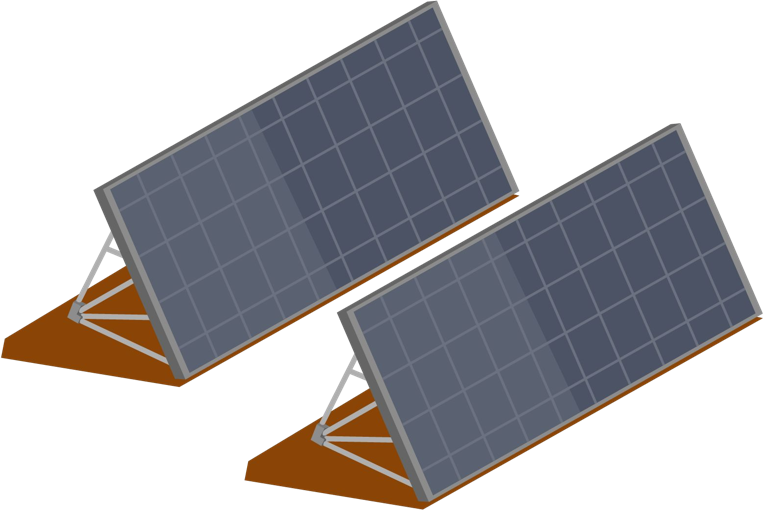
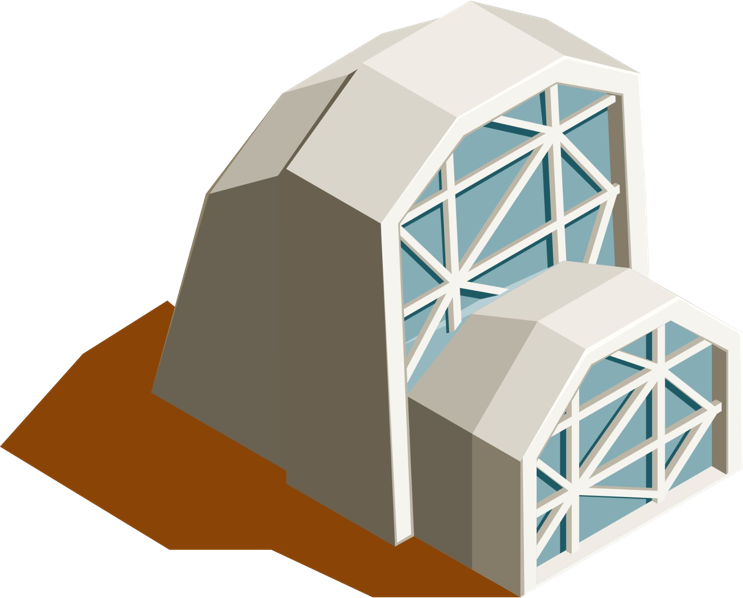
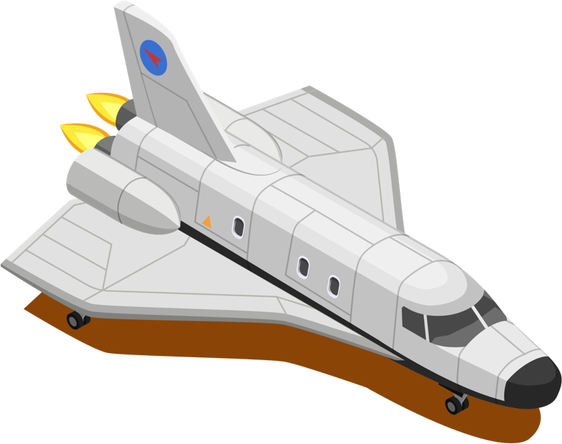
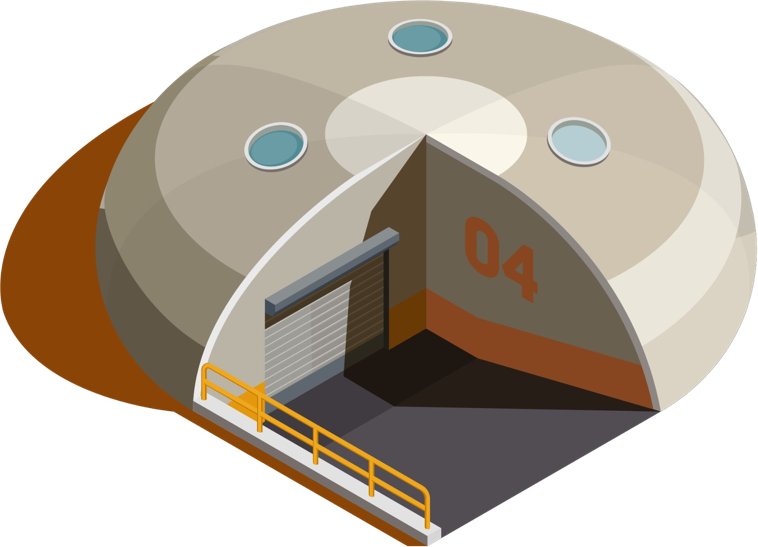
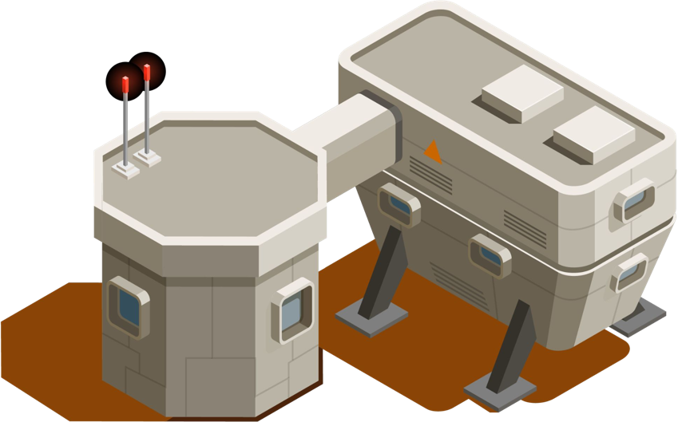
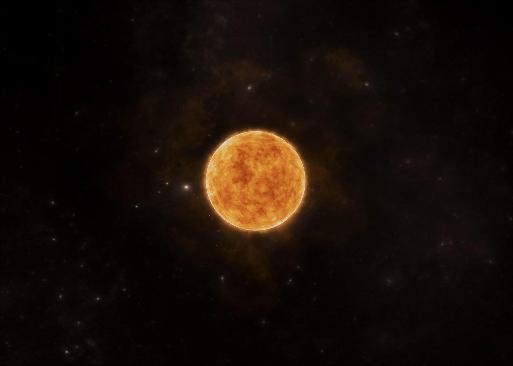

PROJECT
RED
HORIZON
SOLMAP, Challenge #14
Group members: Annalaya, Anna, Pari,
Benonia, Amira, Julia Gorovitz




Imagine…
You are on a walk, trying to find your way through a new place…
Now try again, without using your GPS. No warnings about hazards, no information at all.
We have rich datasets to inform us of elevation, element concentration, radioactivity, etc… at the surface of Mars.
RAD
MOLA
HIRISE
MEDA
But how do you access that info on the spot?

>:(
SOLMAP

CHALLENGES IN MARS – How does SOLMAP address them?

Future directions
CURIOSITY
Earth is the third planet from the Sun and the only one that harbors life in the Solar System. This is where we all live
ECONOMY
Despite being red, Mars is actually a cold place. It's full of iron oxide dust, which gives the planet its reddish cast
EXPANSION
Neptune is the farthest planet from the Sun. It's also the fourth-largest object by diameter in the Solar System
WHY SOLMAP
CURIOSITY
Earth is the third planet from the Sun and the only one that harbors life in the Solar System. This is where we all live
ECONOMY
Despite being red, Mars is actually a cold place. It's full of iron oxide dust, which gives the planet its reddish cast
EXPANSION
Neptune is the farthest planet from the Sun. It's also the fourth-largest object by diameter in the Solar System
AWESOME
PLANET

A PICTURE IS WORTH A THOUSAND WORDS
COMPARISON EARTH VS. MARS
| EARTH | MARS | |
|---|---|---|
| GRAVITY | 1G | 0,371G |
| MOONS | One | Two |
| WATER | Abundant | Scarce |
| TEMPERATURE | 13.85º | -55.15º |
| DAY DURATION | 24 hours | 24 hours, 39 minutes and 35.244 seconds |
METHODOLOGY
Mercury is the closest planet to the Sun and the smallest one in the Solar System—it's only a bit larger than the Moon
Venus has a beautiful name and is the second planet from the Sun. It's terribly hot—even hotter than Mercury
Despite being red, Mars is a cold place. It's full of iron oxide dust, which gives the planet its reddish cast
Jupiter is a gas giant and also the biggest planet in the Solar System. Jupiter is the fourth-brightest object in the night sky
CONDITIONS FOR HUMAN HABITATION
Do you know what helps you make your point clear?
Lists like this one:
- They're simple
- You can organize your ideas clearly
- You'll never forget to buy milk!
And the most important thing: the audience won't miss the point of your presentation

0 M km²
Big numbers catch your audience's attention

A PICTURE ALWAYS REINFORCES THE CONCEPT
Images reveal large amounts of data, so remember: use an image instead of a long text. Your audience will appreciate it

THIS IS A TIMELINE
MERCURY
It's the closest planet to the Sun
VENUS
Venus is the second planet from the Sun
MARS
Mars is actually a very cold place
JUPITER
Jupiter is the biggest planet of them all
PLANETARY DENSITY
GRAVITY (GM/CM3)
Despite being red,
Mars is a cold place
Follow the link in the graph to modify its data and then paste the new one here. For more info, click here
THANKS
CREDITS: This presentation template was created by Slidesgo,
including icons by Flaticon and infographics & images by Freepik